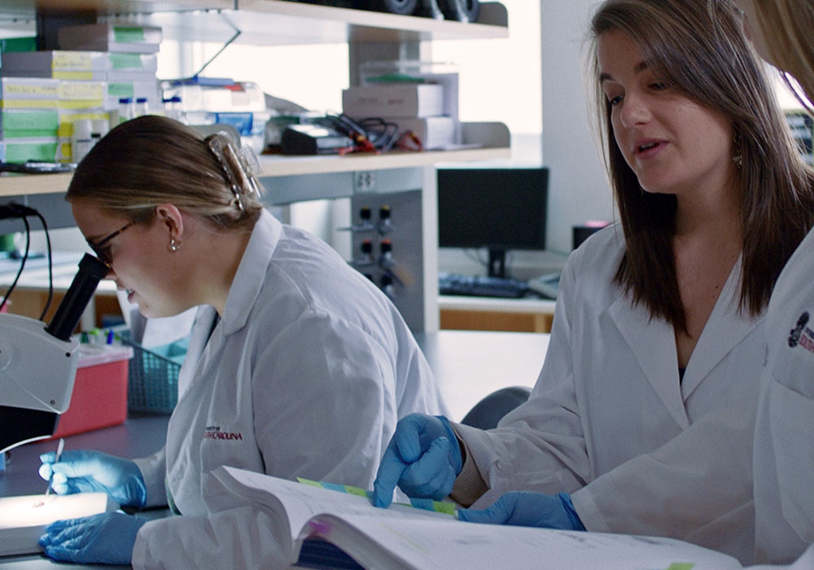
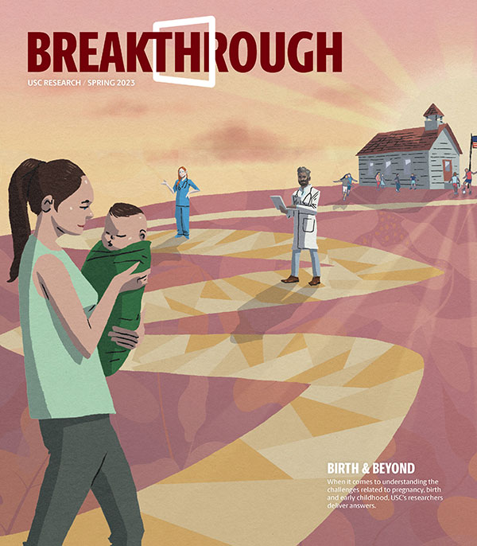

<!--Jenna Stover, CSCE 242-001 */ -->
<!DOCTYPE html>
<html lang = "en"></html>

<head>
    <title>Research at South Carolina</title>
    <link rel="stylesheet" href="uscstyles.css">
</head>

<body>
    <div id="content">
    <header id="main-header">
        
        <nav id="main-nav">
            <ul>
                <li><a href="#">STUDY</a></li>
                <li><a href="#">EXPERIENCE</a></li>
                <li><a href="#">VISIT</a></li>
                <li><a href="#">ADMISSIONS</a></li>
                <li><a href="#">RESEARCH</a></li>
                <li><a href="#">ABOUT</a></li>
                <li><a href="#">NEWS & EVENTS</a></li>
                <li><a href="#">ATHLETICS</a></li>
            </ul>
        </nav>
    </header>
    <main id="main-content">
        <div class="flex-container"></div>
        <section class= "Research-at-SC">
            
            <h1>RESEARCH AT SOUTH CAROLINA</h1>
            <h2>Research is a learning tool of the highest order at the University of South Carolina. Discovery allows us to illuminate history, contextualize the present, and help plan for what's to come.</h2>
             <p>Scientific research, scholarship and creative activity abound throughout USC. That focused presence within nearly all colleges, departments and campuses of the state's flagship university is one reason Carnegie Foundation has designated South Carolina as an institution of very high research activity.</p>
        </section>
            
        <section class="Remarkable-research">
        <div class="flex-container">
            <section class="Remarkable-research col1-2 column">
                
            </section>

            <section class="Remarkable-research col1-2 column">
                <h1>Remarkable Research at USC</h1> 
                <p>The University of South Carolina is the state's most comprehensive health sciences research and teaching institution. Our researchers are working to solve some of the Palmetto State's biggest health issues like stroke, autism and infectious diseases while preparing the next generation to tackle tomorrow's challenges.</p>
            </section>
        </div>
        </section>
       

        <section class="Overcoming-barriers">
        <div class="flex-container">
            <section class="Overcoming-barriers-col1 column">
                <h1>Built for overcoming barriers. </h1>  
                    <p>The University of South Carolina is one of the nation's leading, large-scale research enterprises. Within our campus centers, labs and collectives, students scour for answers alongside experienced faculty. Whether the challenge is formulating new ways to inspire healthier communities or developing new fuel cells, be part of addressing tomorrow's challenges, today.</p> 
                   
                    <a id="Overcoming-link" href="https://www.sc.edu/research/research-opportunities/index.php">STUDENT RESEARCH OPPORTUNITIES >></a>
            </section>
                
            <section class="Overcoming-barriers-col2 column">  
                
            </section>
        </div>
        </section>
        
        <section class="achieving-new-understanding">
        <div class="flex-container">
            <section class="achieving-new-understanding-col1 column">
            
            </section>

            <section class= "achieving-new-understanding-col2 column">
            <h1>
                <p>Achieving New Understanding</p>
            </h1> 
            <p>USC is home to world-class research and researchers. Get to know the university's knowledge seekers and learn how their work generates innovation from arts and humanities to mathematics, engineering and the sciences. </p> 
            <a id="breakthrough-research-link" href="https://www.sc.edu/research/breakthrough-research/index.php">Breakthrough Research >></a></p>
            </section>
        </div>
        </section>
    
        <section class= "Research-spotlights">
            <h1>Research Spotlights</h1>
            <div class="flex-container">
                <section class="Research-spotlights-col1-4 column">
                    
                    <a href="https://www.sc.edu/uofsc/posts/2023/09/09_peru.php">Transformative Peru winter session shapes student passions, career plans >></a>
                    <p>In 2021, a group of 20 students from across majors and class standings journeyed to Peru to explore the modern day capital city of Lina as well as the ancient Incan capital in Cusco and the sacred site of Machu Picchu. This year, another cohort will return for a winter session to explore the rich history and culture of Peru</p>  
                </section>
                <section class="Research-spotlights-col1-4 column">
                    
                    <a href="https://www.sc.edu/uofsc/posts/2023/08/ten_big_things_happening_at_the_university.php">ICYMI: Ten big things happening at the university >></a>
                    <p>The univeristy never sleeps, but it does slow down a bit during the summer. With the start of the fall semester, here's a reminder of some recent happenings that you might have missed, plus a heads up about some major upcoming events.</p> 
                </section>
                <section class="Research-spotlights-col1-4 column">
                    
                    <a href= "https://www.sc.edu/uofsc/posts/2023/08/childrens_sleep_study_2.php">Pilot project helps parents develop better sleep routines for school-age children</a>
                    <p>A sleep promotion intervention program from the Arnold School of Public Health aims to give parents much-needed tools to help their children get the sleep they need during the busy school year.</p> 
                </section>
                <section class= "Research-spotlights-col1-4 column">
                    
                    <a href="https://www.sc.edu/uofsc/posts/2023/08/conversation-toby-jenkins-hip-hop.php">How a hip-hop mindset can help teachers in a time of turmoil</a>
                    <p>While hip-hop has created a lot of good memories, good music and good times, the culture has gifted society much more than just entertainment. Toby Jenkins, a higher ed professor who researches hip-hop culture, writes for The Conversation about the genre's greatest gifts--freedom of thought, flexibility, and truth-telling.</p>
                </section>
            </div>
        </section>

        <section class="Breakthrough-faculty">
        <div class="flex-container">
            <section class="Breakthrough-faculty col1-2 column">
            <h2>
                
            </h2>
             </section>
            <section class="Breakthrough-faculty col1-2 column">
            <h2>
                <h1>Breakthrough Faculty</h1>
                <p>Each year, the Office of the Vice President for Research honors university scholars with Breakthrough awards. The awards honor faculty researchers at two junctures: Breakthrough Leadership in Research for senior faculty or Breakthrough Stars for early career faculty.</p>
                <a id="breakthrough-faculty-link" href="https://www.sc.edu/uofsc/posts/2023/03/breakthrough-stars.php">Award Winners >></a>
            </h2>
            </section>
        </div>
        </section>

        <section class="Investing-in-Research">
        <div class="flex-container">
            <section class="inv-in-res-col1 column">
            <h1>Investing in Research</h1>
                <p>USC generated $237 million in sponsored awards in 2022. Every investment in the pursuit of furthering knowledge helps us create an environment that supports the scholarly and creative activities of all faculty and students and provides the infrastructure necessary for a leading research university. See our funding in action.</p>
                <a id="inv-in-res-link" href="https://www.sc.edu/about/offices_and_divisions/research/dashboards/index.php">Research Dashboards >></a>
            </section>
            <section class="inv-in-res-col2 column">
                
            </section>
        </div>
        </section>

        <section class="Leading-edge">
        <div class="flex-container">
            <section class="Leading-edge col1-2 column">
                
            </section>

            <section class="Leading-edge col1-2 column">
                <h1>The Leading Edge of Health Sciences</h1>
                
                <p>USC is the state's most comprehensive health sciences teaching and research institution. Nationally recognized programs in medicine, nursing, social work, public health, pharmacy, biochemistry, business, computing and others blend classroom learning and unique health care provider partnerships to create premier health sciences learning experiences for students.</p>
                <a id="leading-edge-link" href="https://www.sc.edu/about/south-carolina-at-a-glance/health-sciences/index.php">HEALTH SCIENCES >></a>
            </section>
        </div>
        </section>
       
        <section class="build-better-world">
            <div class="flex-container">
            <section class="build-better-world-col1 column">
                <h1>Let's build a better world</h1>
                <p>The resources of the University of South Carolina are poised to address local and global challenges. We work with public and private collaborators to provide our researchers with the resources and infrastructure they need to make a difference.</p>
                <a id="build-better-link" href="https://www.sc.edu/research/partnership-opportunities/index.php">PARTNERSHIP OPPORTUNITIES</a>
            </section>
            </div>
        </section>

        <section class="vice-president">
            <div class="flex-container">
                <section class= "vice-president col1-2 column">
                    
                </section>
                <section class= "vice-president col1-2 column">
                    <h1>Office of Vice President for Research</h1>
                        <p>At our research-intensive university, a team is dedicated to supporting the entire spectrum of research and scholarly activities at USC, and assisting faculty and student researchers with every step in the research process. </p>

                        <p><strong>Vice President for Research:</strong> Dr. Julius Fridriksson</p>
                        <p><strong>Phone:</strong> 803-777-5458</p>
                        <p><strong>Email:</strong> vpr@mailbox.sc.edu </p>

                        <a id="vice-pres-link" href="https://www.sc.edu/about/offices_and_divisions/research/index.php">OFFICE OF VICE PRESIDENT FOR RESEARCH >></a>
                </section>
            </div>
        </section>
    </main>
    <footer id="sub-footer"> </footer>
    <footer id="main-footer"><p>&copy; University of South Carolina</p></footer>
    </div>
</body>
</html>
